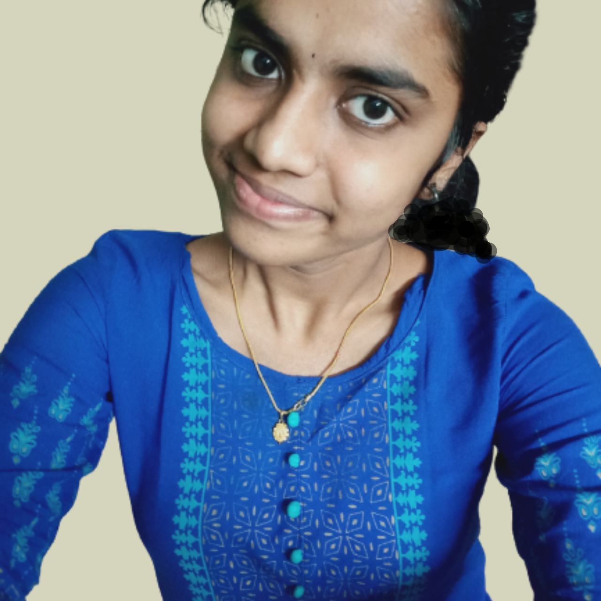

Sandhiya B
FRESHER

Summary
To obtained a challenging position at a recognized firm that offers a consistently positive atmosphere for me to learn a new technologies and implement them for the success of the company
Education
- University college of engineering BITcampus Trichy
- 2019-2023
- CGPA-8.57(till 7th semester)
- St.joseph girls higher secondary school
- St.joseph girls higher secondary school
Technical skills
- JAVA:⭐⭐⭐⭐
- C:⭐⭐⭐
- PYTHON:⭐⭐
- HTML:⭐⭐⭐⭐⭐
- CSS:⭐⭐⭐⭐
- PYTHON FLASK:⭐⭐⭐
- WEB DEVELOPMENT:⭐⭐⭐⭐
Interpersonnal Skills
- Communication skills
- Leadership quality
- problem solving
- Time management
Awards Recieved
- Awarded an ELIITE certificate for successfully completing the course Java with a consolidated score of 80% in
NPTEL ➙
- Awarded certificates for securing second place during the academic year 2020-2021 and third place during
the academic year 2021-2022 for my academic performance
- Certified for successfully completing the Employability Skills Development Training programme conducted
by TITAN Leap, Naandi Foundation from 2022 to 2023.
- Participated in an International-Level Research Conference in 2023 organized by J.J. Engineering college.
Projects
-
Prediction of Gestational Diabetes Mellitus using Stacking Technique in Machine Learning and developed a
web based diet suggestion system.
Extra-curriculur Activities
-
Completed B.A HINDI literature in 2018.
- Elected as the Chess Team Captain by the coaches for the 2022 – 2023 season at UCE,BIT Campus, Trichy
© 2023 sandy